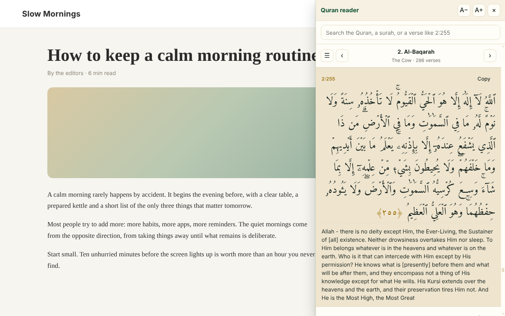
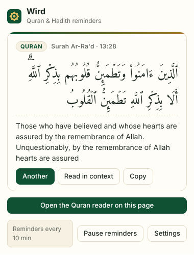
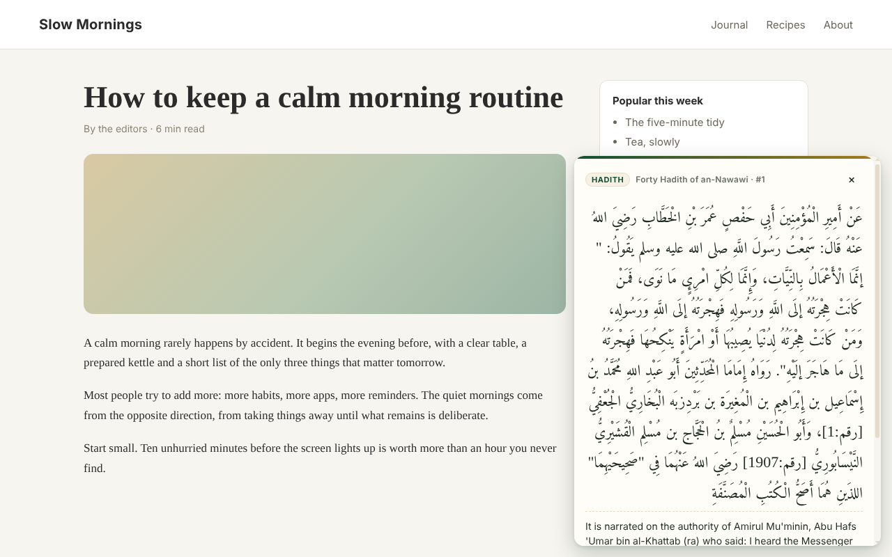
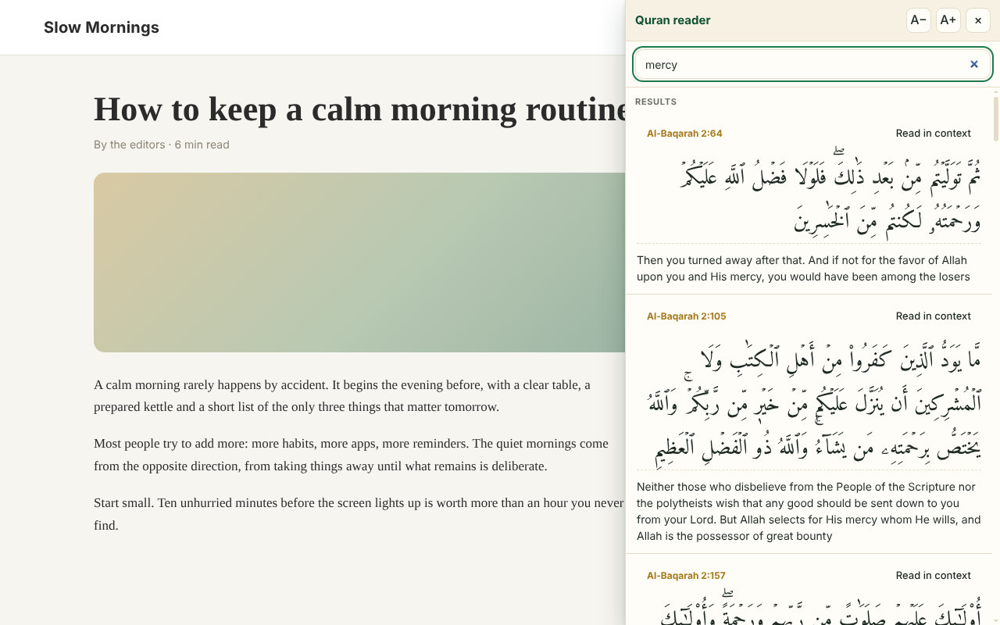
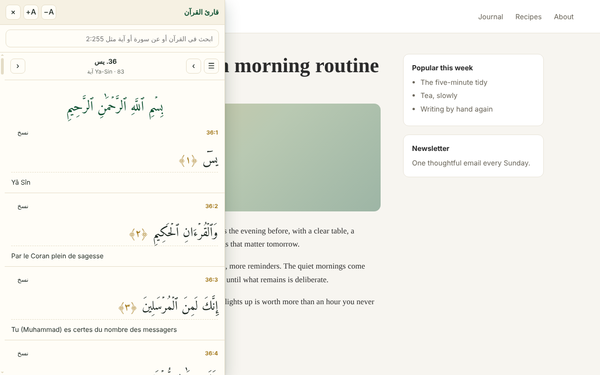

What you get
A small card on the page you are reading, a full reader one shortcut away, and settings that stay out of your way.





Built around the text
Reminders
Every 1 to 1,440 minutes. Alternate Quran and hadith, or pick one. A shuffle bag shows everything once before anything repeats.
Content
All 6,236 verses in Arabic, English and French. About 1,200 hadith: Forty Hadith of an-Nawawi, Forty Hadith Qudsi, and selections from Sahih al-Bukhari and Sahih Muslim.
Reader
Surah list, verse-by-verse reading, previous and next surah, adjustable text size. Open it with Alt Shift Q.
Search
Type
2:255,18:1-10, a surah name, or words. Arabic search ignores diacritics and matches standard spelling.Settings
Interval, content, hadith collections, languages, theme, card position and duration, quiet hours that can cross midnight, and sites where reminders stay off.
Languages
Arabic (right to left), English and French, for both the content and the interface.
How to use it
- Install Wird. The settings page opens on first run.
- Choose your interval, content and languages.
- Browse as usual. A card appears on the page. Use Another, Read in context or Copy.
- Press Alt Shift Q on any page to open the reader.
Want the card on the page itself? In settings, allow access to all sites. Without it, reminders appear as a toolbar badge or a notification.
Search examples
| Type | You get |
|---|---|
| 2:255 | Ayat al-Kursi |
| 18:1-10 | A range of verses |
| Kahf or الكهف | The surah, in any language |
| mercy or الرحمة | Every verse containing the word |
Install
Store listings are coming. Until then, install from a release zip or build it yourself in three commands.
Build it
# needs Node.js 20+
git clone https://github.com/MohamedBen21/wird.git
cd wird
npm ci
npm run buildLoad it
- Open chrome://extensions (Edge: edge://extensions).
- Turn on Developer mode.
- Click Load unpacked and choose .output/chrome-mv3.
Make a store zip
npm run zip # .output/wird-<version>-chrome.zipBuild it
# needs Node.js 20+
git clone https://github.com/<your-user>/<your-repo>.git
cd <your-repo>
npm ci
npm run build:firefoxLoad it
- Open about:debugging#/runtime/this-firefox.
- Click Load Temporary Add-on…
- Choose .output/firefox-mv3/manifest.json.
Temporary add-ons are removed when Firefox closes. A permanent install needs the signed add-on from Mozilla.
Make the Firefox zip and sources zip
npm run zip:firefox
Other commands
npm run dev # Chrome with hot reload npm run dev:firefox # Firefox with hot reload npm test # unit tests npm run compile # type-check npm run lint:firefox # Mozilla add-on linter npm run data # rebuild the bundled Quran and hadith data
Privacy and permissions
Wird asks for no website access when you install it, makes no network requests and collects nothing.
| Permission | Why Wird needs it |
|---|---|
| storage | Saves your settings and reading position. |
| alarms | Runs the reminder timer. |
| activeTab, scripting | Opens the reader on the current page when you click or press the shortcut. |
| All sites (optional) | Shows reminders on the page you are viewing. Requested only from settings. |
| Notifications (optional) | Shows reminders as system notifications. Requested only from settings. |
Sources and licenses
- Quran text and translations: quran-json (CC-BY-4.0)
- Hadith: fawazahmed0/hadith-api (Unlicense)
- Arabic font: Amiri Quran (SIL Open Font License 1.1)
- Wird source code: MIT
Hadith are a curated subset without grading. For study and rulings, refer to scholars and full collections such as sunnah.com.